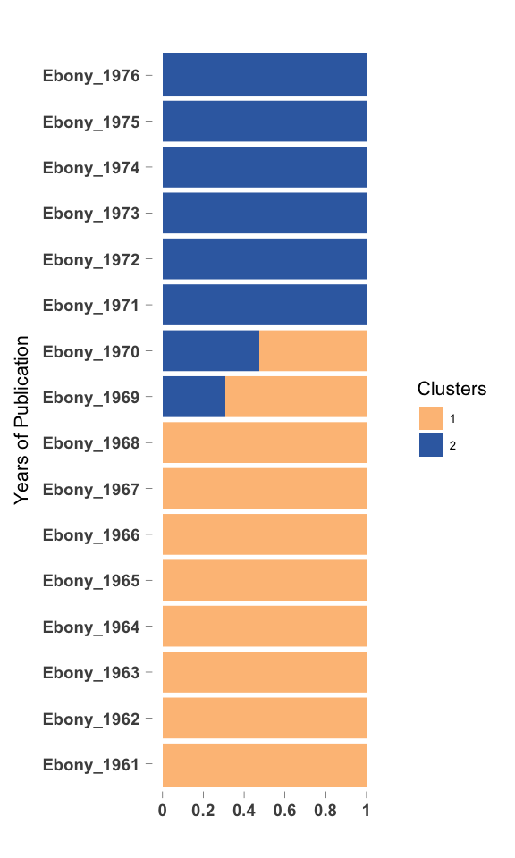
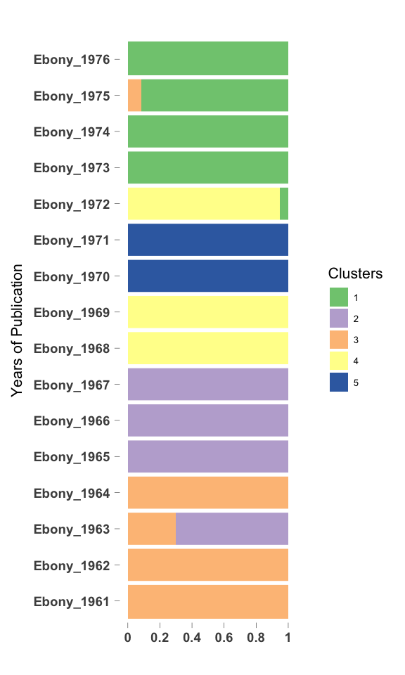

CountClust on Ebony articles - no black, negro terms
Kushal K Dey
4/11/2018
Packages
library(CountClust)## Loading required package: ggplot2library(ggplot2)Intro
We apply CountClust on the word frequencies for yearly data from Ebony articles. We remove identity terms - black, negro and afroamerican - and see which terms affect the clustering now. Here we present the results for the second case study.
Load Data
We first read the counts table of word occurrences in Ebony articles every year.
tab_ebony <- get(load("../output/Document_Term_Matrix_Ebony.rda"))
all_words_ebony <- get(load("../output/all_words_ebony.rda"))Processing and Filtering Data
Next we fit the CountClust model to the tabulated counts data. We first remove the words that occur in only one or two years of text data.
low_occur_words <- apply(tab_ebony, 2, function(x) return(sum(x[x!=0])))
tab2_ebony <- tab_ebony[, which(low_occur_words > 2)]Also remove the words that have just two characters as they are usually suffix-es or wrongly interpreted characters.
tab3_ebony <- tab2_ebony[, which(nchar(colnames(tab2_ebony)) > 2)]negro_words <- grep("negro", colnames(tab3_ebony))
black_words <- match(c("black", "blacks", "blackman"), colnames(tab3_ebony))
afroamerican_words <- match(c("african", "afroamerican"), colnames(tab3_ebony))
tl_words <- which(substring(colnames(tab3_ebony), 1,2) == "tl")
tab4_ebony <- tab3_ebony[, - c(negro_words, black_words, afroamerican_words, tl_words)]Fit CountClust
topic_clus <- list()
for(k in 2:5){
topic_clus[[k]] <- maptpx::topics(tab4_ebony, K=k, tol = 1)
}
save(topic_clus, file = "../output/Ebony_CountClust_no_black_negro.rda")topic_clus <- get(load("../output/Ebony_CountClust_no_black_negro.rda"))Visualization
K= 2
omega <- topic_clus[[2]]$omega
annotation <- data.frame(
sample_id = paste0("X", c(1:NROW(omega))),
tissue_label = factor(rownames(omega),
levels = rownames(omega)))
rownames(omega) <- annotation$sample_id;
StructureGGplot(omega = omega,
annotation = annotation,
palette = RColorBrewer::brewer.pal(8, "Accent")[c(3,5)],
yaxis_label = "Years of Publication",
order_sample = TRUE,
axis_tick = list(axis_ticks_length = .1,
axis_ticks_lwd_y = .1,
axis_ticks_lwd_x = .1,
axis_label_size = 7,
axis_label_face = "bold"))
K= 3
omega <- topic_clus[[3]]$omega
annotation <- data.frame(
sample_id = paste0("X", c(1:NROW(omega))),
tissue_label = factor(rownames(omega),
levels = rownames(omega)))
rownames(omega) <- annotation$sample_id;
StructureGGplot(omega = omega,
annotation = annotation,
palette = RColorBrewer::brewer.pal(8, "Accent"),
yaxis_label = "Years of Publication",
order_sample = TRUE,
axis_tick = list(axis_ticks_length = .1,
axis_ticks_lwd_y = .1,
axis_ticks_lwd_x = .1,
axis_label_size = 7,
axis_label_face = "bold"))K= 4
omega <- topic_clus[[4]]$omega
annotation <- data.frame(
sample_id = paste0("X", c(1:NROW(omega))),
tissue_label = factor(rownames(omega),
levels = rownames(omega)))
rownames(omega) <- annotation$sample_id;
StructureGGplot(omega = omega,
annotation = annotation,
palette = RColorBrewer::brewer.pal(8, "Accent"),
yaxis_label = "Years of Publication",
order_sample = TRUE,
axis_tick = list(axis_ticks_length = .1,
axis_ticks_lwd_y = .1,
axis_ticks_lwd_x = .1,
axis_label_size = 7,
axis_label_face = "bold"))
K= 5
omega <- topic_clus[[5]]$omega
annotation <- data.frame(
sample_id = paste0("X", c(1:NROW(omega))),
tissue_label = factor(rownames(omega),
levels = rownames(omega)))
rownames(omega) <- annotation$sample_id;
StructureGGplot(omega = omega,
annotation = annotation,
palette = RColorBrewer::brewer.pal(8, "Accent"),
yaxis_label = "Years of Publication",
order_sample = TRUE,
axis_tick = list(axis_ticks_length = .1,
axis_ticks_lwd_y = .1,
axis_ticks_lwd_x = .1,
axis_label_size = 7,
axis_label_face = "bold"))
Top driving words in clusters
K=2
out <- ExtractTopFeatures(topic_clus[[2]]$theta, top_features = 100, method = "poisson", options = "min")
driving_words <- t(apply(out$indices, c(1,2), function(x) return(rownames(topic_clus[[2]]$theta)[x])))
driving_words[1:50,]## [,1] [,2]
## [1,] "witli" "watergate"
## [2,] "hae" "pollard"
## [3,] "scobell" "percent"
## [4,] "lennie" "cicely"
## [5,] "barrows" "bicentennial"
## [6,] "blodgett" "baraka"
## [7,] "styron" "attica"
## [8,] "xvas" "dellums"
## [9,] "warmoth" "nikki"
## [10,] "astronaut" "kareem"
## [11,] "bullard" "riles"
## [12,] "darrow" "erving"
## [13,] "levister" "cosell"
## [14,] "wcre" "mcgovern"
## [15,] "whitmore" "dymally"
## [16,] "petey" "khalilah"
## [17,] "vvas" "plinton"
## [18,] "karam" "pam"
## [19,] "dunn" "revenuesharing"
## [20,] "wliich" "joplin"
## [21,] "monnerville" "sweetback"
## [22,] "styrons" "mctear"
## [23,] "sis" "jermaine"
## [24,] "allensworth" "aggrey"
## [25,] "javits" "abduljabbar"
## [26,] "jennie" "liberation"
## [27,] "groppi" "welsing"
## [28,] "judo" "callahan"
## [29,] "zandt" "caucus"
## [30,] "his" "namibia"
## [31,] "god" "black_panthers"
## [32,] "quads" "spinners"
## [33,] "beaubien" "imamu"
## [34,] "wba" "hbc"
## [35,] "streetcar" "guineabissau"
## [36,] "bein" "winkfield"
## [37,] "wlien" "stax"
## [38,] "bcds" "acupuncture"
## [39,] "listons" "congresswoman"
## [40,] "ikon" "amiri"
## [41,] "canonization" "meriwether"
## [42,] "said" "waddles"
## [43,] "davids" "sostre"
## [44,] "preminger" "tilmon"
## [45,] "delois" "artis"
## [46,] "kazan" "seale"
## [47,] "nichelle" "debolt"
## [48,] "neer" "sids"
## [49,] "mantequilla" "transracial"
## [50,] "mclendon" "embry"K=3
out <- ExtractTopFeatures(topic_clus[[3]]$theta, top_features = 100, method = "poisson", options = "min")
driving_words <- t(apply(out$indices, c(1,2), function(x) return(rownames(topic_clus[[2]]$theta)[x])))
driving_words[1:50,]## [,1] [,2] [,3]
## [1,] "scobell" "watergate" "barrows"
## [2,] "blodgett" "cicely" "wcre"
## [3,] "warmoth" "bicentennial" "vvas"
## [4,] "levister" "percent" "wliich"
## [5,] "karam" "dellums" "mantequilla"
## [6,] "monnerville" "kareem" "witli"
## [7,] "javits" "riles" "styrons"
## [8,] "allensworth" "erving" "rickey"
## [9,] "judo" "cosell" "hae"
## [10,] "zandt" "dymally" "bcds"
## [11,] "beaubien" "mcgovern" "wlien"
## [12,] "god" "khalilah" "ikon"
## [13,] "listons" "pam" "kazan"
## [14,] "davids" "revenuesharing" "neer"
## [15,] "preminger" "sweetback" "holte"
## [16,] "civil_rights" "mctear" "havc"
## [17,] "mclendon" "aggrey" "stniggle"
## [18,] "brazilians" "abduljabbar" "histor"
## [19,] "narcisse" "welsing" "cullinan"
## [20,] "seretse" "callahan" "vvere"
## [21,] "noga" "spinners" "wdth"
## [22,] "nubia" "guineabissau" "keckley"
## [23,] "pisani" "hbc" "pcople"
## [24,] "alba" "acupuncture" "brashear"
## [25,] "saintjacques" "meriwether" "cbl"
## [26,] "wadleigh" "waddles" "harley"
## [27,] "coffey" "tilmon" "reenlistment"
## [28,] "picou" "artis" "vvould"
## [29,] "louvestre" "pollard" "tnie"
## [30,] "sturrup" "debolt" "vill"
## [31,] "dwights" "sids" "durousseau"
## [32,] "mcvea" "embry" "wiiite"
## [33,] "egd" "debolts" "countr"
## [34,] "kelsey" "psychosurgery" "halley"
## [35,] "sprattling" "sahel" "wtre"
## [36,] "demello" "kurt" "witliout"
## [37,] "matthias" "joetha" "fuld"
## [38,] "monty" "zaire" "owm"
## [39,] "mundle" "pips" "havx"
## [40,] "crump" "shockley" "hac"
## [41,] "wilde" "randle" "xvho"
## [42,] "brantley" "chandra" "styron"
## [43,] "accutron" "filmmakers" "notliing"
## [44,] "bogalusa" "hela" "xvere"
## [45,] "1961" "verta" "landau"
## [46,] "eken" "haizlip" "naulls"
## [47,] "nubian" "chicanos" "wiiat"
## [48,] "aborigine" "caucus" "tvo"
## [49,] "liston" "dorgan" "govemment"
## [50,] "buganda" "wedgeworth" "imd"K=4
out <- ExtractTopFeatures(topic_clus[[4]]$theta, top_features = 100, method = "poisson", options = "min")
driving_words <- t(apply(out$indices, c(1,2), function(x) return(rownames(topic_clus[[2]]$theta)[x])))
driving_words[1:50,]## [,1] [,2] [,3] [,4]
## [1,] "barrows" "scobell" "percent" "sostre"
## [2,] "styron" "blodgett" "bicentennial" "wyche"
## [3,] "bullard" "levister" "cosell" "mantequilla"
## [4,] "whitmore" "god" "khalilah" "waddles"
## [5,] "styrons" "karam" "mctear" "haizlip"
## [6,] "monnerville" "zandt" "aggrey" "saperstein"
## [7,] "groppi" "beaubien" "abduljabbar" "emmerich"
## [8,] "bcds" "listons" "callahan" "rander"
## [9,] "ikon" "mclendon" "spinners" "holte"
## [10,] "kazan" "narcisse" "hbc" "cullinan"
## [11,] "delois" "pisani" "guineabissau" "magicians"
## [12,] "neer" "coffey" "acupuncture" "moorman"
## [13,] "seretse" "picou" "watergate" "ndpa"
## [14,] "bahaullah" "louvestre" "tilmon" "keckley"
## [15,] "saintjacques" "nubia" "debolt" "yoki"
## [16,] "wadleigh" "sprattling" "sids" "cbl"
## [17,] "brazilians" "liston" "debolts" "durousseau"
## [18,] "brashear" "matthias" "psychosurgery" "halley"
## [19,] "billys" "crump" "sahel" "whites"
## [20,] "noga" "wilde" "joetha" "aquarius"
## [21,] "reenlistment" "brantley" "kurt" "tempts"
## [22,] "egd" "accutron" "zaire" "landau"
## [23,] "kelsey" "1961" "pips" "naulls"
## [24,] "harley" "blodgetts" "randle" "guadalajara"
## [25,] "bagpipe" "cavities" "shockley" "pichon"
## [26,] "rickey" "muu" "hela" "riles"
## [27,] "sturrup" "tilson" "dorgan" "battiste"
## [28,] "demello" "lewter" "wedgeworth" "byberry"
## [29,] "monty" "karams" "nona" "pelton"
## [30,] "mundle" "lambo" "aphrodisiac" "panafricans"
## [31,] "fuld" "diodorus" "noell" "parson"
## [32,] "dobys" "finkley" "ricky" "femaleheaded"
## [33,] "sandras" "khotso" "cicely" "gmi"
## [34,] "xvho" "magicool" "sterilizations" "aitf"
## [35,] "hac" "ydi" "sizemore" "sharman"
## [36,] "cid" "dwights" "amniocentesis" "treemonisha"
## [37,] "eken" "maples" "pickard" "luqman"
## [38,] "xvere" "hennagan" "demps" "ayds"
## [39,] "viet" "alhambra" "holden" "buddys"
## [40,] "bogalusa" "perucho" "blackonblack" "mccombs"
## [41,] "lennie" "guthridge" "sef" "magee"
## [42,] "kirwood" "canaan" "wimer" "eyo"
## [43,] "ramoboas" "moorefield" "bbf" "breiner"
## [44,] "dassin" "hasties" "paigc" "crutchfield"
## [45,] "handkiss" "hayling" "amin" "xernona"
## [46,] "whitmores" "rumfords" "shaune" "pollutants"
## [47,] "montys" "mme" "llewellyn" "fergies"
## [48,] "tmha" "tema" "dialysis" "archies"
## [49,] "franchising" "clemson" "argentine" "sirhan"
## [50,] "ramoboa" "madera" "sherwoods" "sweethack"K=5
out <- ExtractTopFeatures(topic_clus[[5]]$theta, top_features = 100, method = "poisson", options = "min")
driving_words <- t(apply(out$indices, c(1,2), function(x) return(rownames(topic_clus[[2]]$theta)[x])))
driving_words[1:50,]## [,1] [,2] [,3] [,4]
## [1,] "watergate" "scobell" "blodgett" "barrows"
## [2,] "percent" "monnerville" "levister" "styrons"
## [3,] "cicely" "seretse" "karam" "waddles"
## [4,] "bicentennial" "brazilians" "god" "rickeys"
## [5,] "cosell" "saintjacques" "zandt" "bcds"
## [6,] "khalilah" "wadleigh" "listons" "ikon"
## [7,] "pam" "noga" "mclendon" "haizlip"
## [8,] "mctear" "narcisse" "pisani" "kazan"
## [9,] "aggrey" "egd" "picou" "rickey"
## [10,] "abduljabbar" "kelsey" "louvestre" "neer"
## [11,] "callahan" "sturrup" "sprattling" "brashear"
## [12,] "spinners" "coffey" "crump" "paiges"
## [13,] "hbc" "dwights" "crumps" "harley"
## [14,] "guineabissau" "demello" "1961" "reenlistment"
## [15,] "acupuncture" "monty" "accutron" "xerox"
## [16,] "dymally" "mundle" "blodgetts" "fuld"
## [17,] "tilmon" "eken" "cavities" "hac"
## [18,] "debolt" "bogalusa" "muu" "xvho"
## [19,] "sids" "brantley" "tilson" "xvere"
## [20,] "artis" "handkiss" "karams" "dassin"
## [21,] "debolts" "bautzen" "lambo" "kirwood"
## [22,] "psychosurgery" "hindustani" "diodorus" "ramoboas"
## [23,] "sahel" "lefthandedness" "magicool" "guadalajara"
## [24,] "joetha" "montys" "ydi" "pichon"
## [25,] "kurt" "tmha" "maples" "doby"
## [26,] "zaire" "starletta" "alhambra" "styron"
## [27,] "pips" "lewter" "langdon" "nonsister"
## [28,] "randle" "edgerton" "perucho" "ramoboa"
## [29,] "shockley" "lymon" "hasties" "femaleheaded"
## [30,] "hela" "thackeray" "hayling" "ogunde"
## [31,] "dorgan" "finkley" "rumfords" "hurd"
## [32,] "wedgeworth" "khotso" "tema" "bluesmen"
## [33,] "nona" "crummie" "guthridge" "aitf"
## [34,] "aphrodisiac" "grahame" "picous" "sharman"
## [35,] "noell" "handedness" "canaan" "treemonisha"
## [36,] "ricky" "handkissing" "rumford" "andres"
## [37,] "sterilizations" "levias" "njoroge" "kassy"
## [38,] "sizemore" "righthandedness" "pentathlon" "klh"
## [39,] "amniocentesis" "kostrubala" "wesbury" "archies"
## [40,] "pickard" "warhawk" "ahmes" "fergies"
## [41,] "demps" "nkrumahs" "ericsson" "hueneme"
## [42,] "holden" "hennagan" "mccluskey" "ludy"
## [43,] "blackonblack" "marian" "spitzer" "phillda"
## [44,] "sef" "yerby" "1960" "xvork"
## [45,] "wimer" "beins" "arrid" "harries"
## [46,] "bbf" "doubloon" "almonds" "khanh"
## [47,] "paigc" "mclemore" "pepsicola" "waltann"
## [48,] "amin" "wilden" "garrison" "swindall"
## [49,] "shaune" "wvsc" "seafarers" "trina"
## [50,] "llewellyn" "silverthome" "engle" "xxas"
## [,5]
## [1,] "sostre"
## [2,] "wyche"
## [3,] "mantequilla"
## [4,] "emmerich"
## [5,] "rander"
## [6,] "holte"
## [7,] "cullinan"
## [8,] "magicians"
## [9,] "moorman"
## [10,] "ndpa"
## [11,] "keckley"
## [12,] "cbl"
## [13,] "durousseau"
## [14,] "whites"
## [15,] "tempts"
## [16,] "landau"
## [17,] "naulls"
## [18,] "battiste"
## [19,] "byberry"
## [20,] "pelton"
## [21,] "panafricans"
## [22,] "gmi"
## [23,] "riles"
## [24,] "ayds"
## [25,] "buddys"
## [26,] "mccombs"
## [27,] "breiner"
## [28,] "crutchfield"
## [29,] "xernona"
## [30,] "darrow"
## [31,] "charmtred"
## [32,] "serutan"
## [33,] "shadrack"
## [34,] "swanigan"
## [35,] "bankmptcy"
## [36,] "charlevoix"
## [37,] "matson"
## [38,] "mccomb"
## [39,] "berryhill"
## [40,] "cac"
## [41,] "cartv"
## [42,] "emmerichs"
## [43,] "enterprisejournal"
## [44,] "moo"
## [45,] "sylvain"
## [46,] "lorenza"
## [47,] "rapidez"
## [48,] "narco"
## [49,] "south"
## [50,] "asg"SessionInfo
sessionInfo()## R version 3.5.0 (2018-04-23)
## Platform: x86_64-apple-darwin15.6.0 (64-bit)
## Running under: macOS Sierra 10.12.6
##
## Matrix products: default
## BLAS: /Library/Frameworks/R.framework/Versions/3.5/Resources/lib/libRblas.0.dylib
## LAPACK: /Library/Frameworks/R.framework/Versions/3.5/Resources/lib/libRlapack.dylib
##
## locale:
## [1] en_US.UTF-8/en_US.UTF-8/en_US.UTF-8/C/en_US.UTF-8/en_US.UTF-8
##
## attached base packages:
## [1] stats graphics grDevices utils datasets methods base
##
## other attached packages:
## [1] CountClust_1.6.1 ggplot2_2.2.1
##
## loaded via a namespace (and not attached):
## [1] Rcpp_0.12.17 RColorBrewer_1.1-2 pillar_1.2.2
## [4] compiler_3.5.0 plyr_1.8.4 tools_3.5.0
## [7] boot_1.3-20 digest_0.6.15 nlme_3.1-137
## [10] evaluate_0.10.1 tibble_1.4.2 gtable_0.2.0
## [13] lattice_0.20-35 mgcv_1.8-23 rlang_0.2.0
## [16] Matrix_1.2-14 yaml_2.1.19 parallel_3.5.0
## [19] cluster_2.0.7-1 stringr_1.3.1 knitr_1.20
## [22] gtools_3.5.0 stats4_3.5.0 rprojroot_1.3-2
## [25] grid_3.5.0 nnet_7.3-12 cowplot_0.9.2
## [28] maptpx_1.9-5 flexmix_2.3-14 rmarkdown_1.9
## [31] limma_3.36.1 reshape2_1.4.3 magrittr_1.5
## [34] MASS_7.3-49 backports_1.1.2 scales_0.5.0
## [37] htmltools_0.3.6 modeltools_0.2-21 permute_0.9-4
## [40] picante_1.7 colorspace_1.3-2 ape_5.1
## [43] stringi_1.2.2 lazyeval_0.2.1 munsell_0.4.3
## [46] slam_0.1-43 SQUAREM_2017.10-1 vegan_2.5-1This R Markdown site was created with workflowr